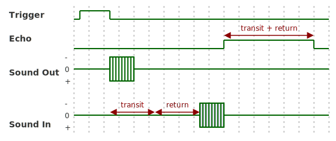
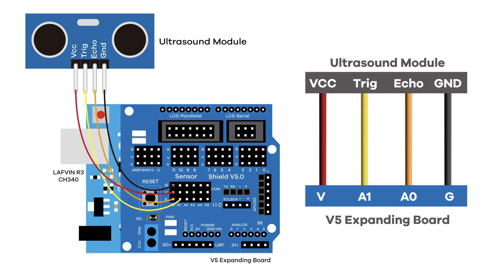
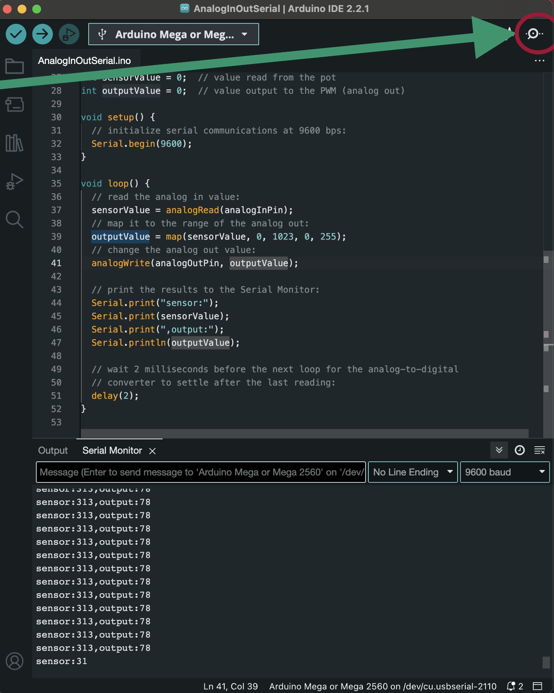
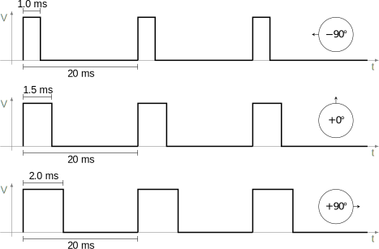
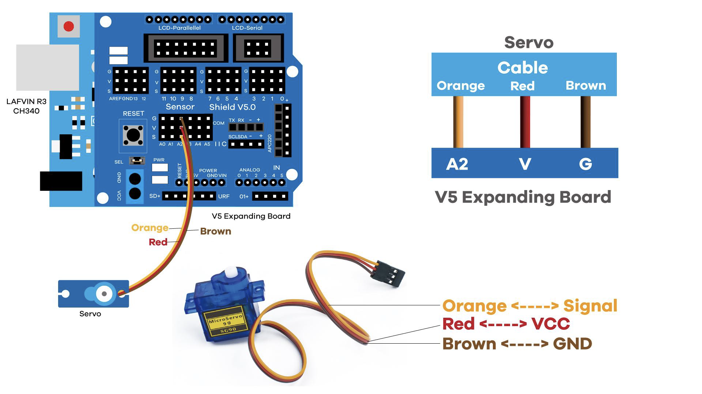

Obstacle Avoidance
Ultrasonic sensor and servo motor
1 Background
1.0.1
The sensor module in your kit is basically an electronic bat (the animal, not the baseball equipment): one of its metal cylinders is a speaker, and the other a microphone. By sending out a burst of sound and listening for the echo, the sensor can determine how far away an object is.

Echo pin high for the same amount of time it took for the sound to return. The Arduino can measure this time to determine the distance to the object that reflected the sound.
The speed of sound is about 340 m/s in air, and the echo’s delay represents twice the distance to the object (since the sound has to travel to the object and back). The Arduino can measure this delay with its pulseIn() function (line 60), which returns the time in microseconds that a pin is high. The conversion from time to distance is straightforward:
\[\begin{align*} \text{distance} &= \frac{1}{2} \times \text{speed} \times \text{time} \\ &= \frac{1}{2} \times 340 \, \text{m/s} \times \frac{\text{time}}{1,000,000 \, \mu\text{s/s}} \times 100 \, \text{cm/m} \\ &\approx \frac{1}{59}\, \text{cm/}\mu\text{s} \times \text{time} \end{align*}\]
1.1 Wiring

1.2 Code
// Pin definitions for the ultrasonic sensor
int pinTrigger = A1;
int pinEcho = A0;
float checkDistance()
{
digitalWrite(pinTrigger, LOW);
delayMicroseconds(2);
digitalWrite(pinTrigger, HIGH);
delayMicroseconds(10);
digitalWrite(pinTrigger, LOW);
float distance = pulseIn(pinEcho, HIGH) / 58.00;
delay(10);
return distance;
}
void setup()
{
Serial.begin(9600);
pinMode(pinTrigger, OUTPUT);
pinMode(pinEcho, INPUT);
}
void loop()
{
// Check for obstacles in front
float distance = checkDistance();
Serial.print("Distance: ");
Serial.print(distance);
Serial.println(" cm");
// Delay for a second so *we* can read the output
delay(1000);
}1.2.1 Running the code
When you first upload the code, you won’t be able to tell it’s running and the car won’t move. To see what’s happening, you’ll need open the

1.2.2
Using the same USB cable you used to program the Arduino, you can transmit data between the computer and Arduino as part of your running program. Frequently, you’ll want to use an Arduino for fast, consistently timed measurements in the real world, but then analyze and display that data on your computer, where you have more processing power and storage.
The IDE’s
2 Servo Motor
2.1 Background
2.1.1
For small, low-cost applications like radio-controlled toys, hobby servos are a common way of generating precise movements through closed-loop control. Typically, the output shaft is linked to a potentiometer, which allows the motor to sense its position. When the motor is set to a different position, the onboard electronics sense the difference between actual and intended position and drive the internal DC motor until the two match (see Figure 2).
Because the servo’s gearing greatly reduces the speed of the motor, the simple DC motor is able to adjust the position of the output shaft with high precision—fractions of a full rotation. This makes hobby servos ideal for applications like steering in radio-controlled cars, or controlling the angle of a robotic arm.


The control signal for hobby servos is a sort of PWM signal, where the width of the pulse determines the desired position of the servo. The pulse is typically 1-2 ms long, and repeats every 20 ms. The servo’s internal electronics use this signal to adjust the motor’s position to match the desired position.

Stefan Tauner, CC BY-SA 3.0, via Wikimedia Commons
{kind=link}
3 Wiring

4 Code
#include <Servo.h>
Servo servo_A2;
int pinTrigger = A1;
int pinEcho = A0;
float Left_Distance = 0;
float Right_Distance = 0;
float Front_Distance = 0;
// Pin definitions for motor control
int pinRightN = 2;
int pinRightP = 4;
int pinLeftN = 7;
int pinLeftP = 8;
int pinRightSpeed = 5;
int pinLeftSpeed = 6;
void driveForward(int car_speed)
{
digitalWrite(pinRightN, LOW);
digitalWrite(pinRightP, HIGH);
digitalWrite(pinLeftN, LOW);
digitalWrite(pinLeftP, HIGH);
analogWrite(pinRightSpeed, car_speed);
analogWrite(pinLeftSpeed, car_speed);
}
void driveBackward(int car_speed)
{
digitalWrite(pinRightN, HIGH);
digitalWrite(pinRightP, LOW);
digitalWrite(pinLeftN, HIGH);
digitalWrite(pinLeftP, LOW);
analogWrite(pinRightSpeed, car_speed);
analogWrite(pinLeftSpeed, car_speed);
}
void driveLeft(int car_speed)
{
digitalWrite(pinRightN, LOW);
digitalWrite(pinRightP, HIGH);
digitalWrite(pinLeftN, HIGH);
digitalWrite(pinLeftP, LOW);
analogWrite(pinRightSpeed, car_speed);
analogWrite(pinLeftSpeed, car_speed);
}
void driveRight(int car_speed)
{
digitalWrite(pinRightN, HIGH);
digitalWrite(pinRightP, LOW);
digitalWrite(pinLeftN, LOW);
digitalWrite(pinLeftP, HIGH);
analogWrite(pinRightSpeed, car_speed);
analogWrite(pinLeftSpeed, car_speed);
}
void STOP()
{
digitalWrite(pinRightN, HIGH);
digitalWrite(pinRightP, HIGH);
digitalWrite(pinLeftN, HIGH);
digitalWrite(pinLeftP, HIGH);
analogWrite(pinRightSpeed, 0);
analogWrite(pinLeftSpeed, 0);
}
float checkDistance()
{
digitalWrite(pinTrigger, LOW);
delayMicroseconds(2);
digitalWrite(pinTrigger, HIGH);
delayMicroseconds(10);
digitalWrite(pinTrigger, LOW);
float distance = pulseIn(pinEcho, HIGH) / 58.00;
delay(10);
return distance;
}
void setup()
{
pinMode(pinRightN, OUTPUT);
pinMode(pinRightP, OUTPUT);
pinMode(pinLeftN, OUTPUT);
pinMode(pinLeftP, OUTPUT);
pinMode(pinTrigger, OUTPUT);
pinMode(pinEcho, INPUT);
servo_A2.attach(A2);
}
void loop()
{
// Check for obstacles in front
servo_A2.write(90);
float Front_Distance = checkDistance();
if (0 < Front_Distance && Front_Distance <= 20)
{
// Obstacle detected in front, stop the car
STOP();
delay(100);
// Look left and measure nearest distance...
servo_A2.write(180);
delay(500);
Left_Distance = checkDistance();
delay(100);
// Look right and measure nearest distance...
servo_A2.write(0);
delay(500);
Right_Distance = checkDistance();
delay(100);
// Compare distances and turn accordingly
if (Right_Distance <= Left_Distance)
{
driveLeft(130);
delay(600);
}
else
{
driveRight(130);
delay(600);
}
}
else
{
driveForward(150);
}
}
5 Modifications
5.1 Check more directions
Right now, the car only checks the front, left, and right directions for obstacles. Maybe you want to sweep the ultrasonic sensor and see what angle gives the clearest path?